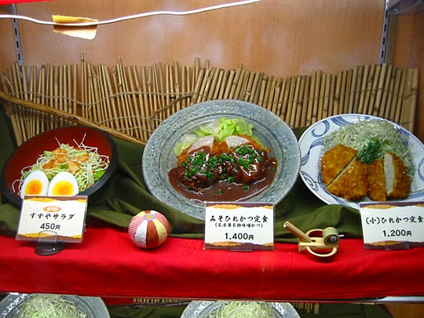

Photos from our second trip to Japan, 18 March–2 April 2005 are on Flickr
Japan, 18-28 April 2003
- Index
- Arrival, Day 1: Tsukiji Fish Market; Hama-Rikyu Gardens [1.66Mb]
- Day 1 (continued): DesignFesta [1.25Mb]
- Day 2: Meiji Shrine and inner garden; Harajuku; Nezu Institute; Aoyama cemetery [2.38Mb]
- Day 3: Ghibli Museum, Mitaka; Shinjuku [1.66Mb]
- Day 4: Hakone: Taisekan ryokan [1.81Mb]
- Day 5: Hakone: Taisekan; Hakone Museum of Art; ropeway to Owakudani; Lake Ashino-ko [1.93Mb]
- Day 6: Kamakura [4.37Mb]
- Day 7: Senso-ji temple; Asakusa; Joe [1.46Mb]
- Day 8: Koishikawa Korakuen garden; Seibu department store; Ginza [1.2Mb]
- Day 9: Shinjuku-gyoen gardens [2Mb]
- Day 9 (continued): Harajuku, Ueno Park and the Tokyo National Museum, Roppongi Hills [1.59Mb]
Monday 21 April: Ghibli Museum, Mitaka
This provided the main impetus for our trip to Japan.
- 1977
- Aged 6, Enthralled by animation series Heidi, girl of the Alps, (by Miyazaki and Isao Takahata, who co-founded Studio Ghibli, for World Masterpiece Theatre) translated into Afrikaans. I had no idea it was a Japanese production at the time, but it fueled my interest in Europe. [If you read the guestbook on the WMT site above, you'll find many similar stories by people who watched translated anime in all corners of the world.]
- 1992
- As a result of my first visit to London, I start reading translated manga, but somehow miss the Nausicaä series. In another missed opportunity, my visit coincides with the ICA's anime festival in October, at which I see 3 films, but no Studio Ghibli films. (I know Kiki's Delivery Service was showing.)
- 1994
- My brother buys Nausicaä vol.2 during a stay in Leiden, The Netherlands. It makes a big impression on me.
- 1997-1998
- While living in London, Kelly and I buy all four volumes of Nausicaä. It's one of the best fantasy books I've ever read.
- 1998
- Unbeknownst to me, the Ghibli Museum project gets underway in Japan.
- 2000
- The release of Princess Mononoke in the UK stirs more interest. I love the film, and as it was distributed by Disney in the west, am able to buy the DVD. I discover the excellent fan website, nausicaa.net. Through this I discover the Heidi connection, which makes me realise Miyazaki's influence on me is as significant and old as Disney's.
- 2001
- As part of Japan 2001 in London, the Barbican screens a Studio Ghibli film festival. I see all 11 films.
- October 2001
- Ghibli Museum opens in Mitaka.
- 2002
- We purchase 6 Ghibli DVDs through amazon.co.jp: Laputa, Totoro, Porco Rosso, Whisper of the Heart, My Neighbours the Yamadas, and Spirited Away,which I had not yet seen. As good as I consider all the others, this one astounds me in its power, originality, imagination and intelligence. It becomes one of my favourite films of all time, followed by Totoro and Whisper of the Heart. Over Christmas, in South Africa, friends and family watch all 6 films as well.
- 2003
- Buy Only Yesterday.
- April 2003
- Travel to Japan for a 10-day holiday. Visit Ghibli Museum. Buy Kiki's Delivery Service.
Earlier that morning
Monday morning commuters in Shibuya station
Shinjuku station: Yoyogi RC Building fading into the sky.
West Shinjuku intersection. Triple towers of Shinjuku Park Tower visible in the background
Ghibli Museum
The Ghibli Museum more than lived up to expectations — which is saying a lot. Spent 6½ hours there. Hours in each room. You can't take photos inside (just as well), so all our photos are of the outside of the building.
But before I continue, here's an extract from the museum's mission statement by executive director Hayao Miyazaki:
This Is the Kind of Museum I Want to Make!
Something interesting but that would put visitors at their ease.
A museum where various things can be discovered.
A museum based on a clear and consistent philosophy.
To make such a museum, the building must be...
Put together as if it were a film;
Not an overbearing, flamboyant, gaudy or suffocating builiding;
A space where people can make themselves at home, especially when it's less crowded;
Something to make people want to touch the things in it;
A building through which air and light can freely flow.
The museum must be run in such a way to...
Treat small children as if they were grown-ups;
Accommodate the handicapped as much as possible;
Give the staff a working environment to be confident an proud of;
Not force visitors to follow a pre-determined, fixed course;
Provide exhibits that will stimulate a wealth of ideas, while avoiding worn out displays covered with dust.
The displays will be...
Not only for the benefit of people who are already fans of Studio Ghibli;
Not memorials to Studio Ghibli with only exhibits from its past films;
Things and spaces that will allow visitors to appreciate, just by looking, what it's like to be an animator and to gain a new appreciation for animation;
Original works and pictures made for the museum, and exhibitied in a projection room or an exhibition room; works that can be made to come alive; original short films that have been created for and released in the museum only;
Exhibitions of Ghibli's past films that will encourage a deeper understanding of these films.
[...]
This is the kind of museum I don't want to make...
A pretentious museum;
An arrogant museum;
A museum that treats its contents as if they were more important than people;
A museum that displays uninteresting works as if they were significant.
Mitaka is about half an hour by train from Shinjuku. It's a quiet, green suburb.
Getting there

Outside Mitaka station: the Ghibli Museum bus stop
Special museum bus

Entrance to the museum. The Hundertwasser House was one of the inspirations for the architecture. It also has something of a Spanish feel. There's a robot soldier from Laputa on the roof garden.
View from half-way up. The museum is situated in the west section of Inokashira Park, so it's surrounded by mature trees
Pity you can't make out all the Ghibli coats of arms on the awnings
Just like in the film, the robot gazes down benevolently at living creatures scampering beneath it. You're allowed to touch, of course
I'm not worthy! The roof garden was landscaped by Miyazaki's son, incidentally
All the Japanese kids go like that when they get their picture taken
While hollow, the bronze robot has a solid feel and is sturdily constructed
On the roof. Skylights of the restaurant
Little touches everywhere. From the loose glass spheres integrated into the railings, to old-fashioned French taps in the bathroom, to a secret pawprint in one of the floor tiles, to the secret door with only a mirror behind it. (Kelly also discovers the wonders of fully-equipped Japanese loos — warm seat, rinse, blow-dry, and recorded flushing noises.)
One of countless little touches. The cat from Kiki on the outside taps
The building is full of gorgeous stained-glass windows, based on the films but not depicting any particular scenes. Since you can't photograph inside the building, this is the only way I could get a photo of one.
The drain in the courtyard, by the hand-pump well
Secret pawprint near the lockers
(Jiji's?)
But what is great is how it foregrounds the wondrous craft that is animation — its history, principles and techniques — without wordy explanations. Just through examples, fun and interesting in their own right, created specifically for the museum, that makes it seem easy to understand and create. Any child would want to go home and try. Where explanations are provided, they're mostly marker/watercolour scribbles and doodles in Miyazaki's hand, on watercolour paper, pinned to the wall.
Some of the highlights: The beautiful Totoro zootrope (in a dark room with haunting looping piano music by Joe Hisaishi), the cluttered animator's room (centerpiece: an easel with this drawing from Howl's Moving Castle), the background painter's room with the most exquisite original watercolours lining the walls — the Spirited Away backgrounds, including the tree at the turn-off, the spirit world entrance, Yubaba's room... The short looping animations including the wonderful fish food-chain one. The Laputa mine model, a painstaking reconstruction of the opening scene, but with countless touches if you look closer, like fossils and a buried robot in the rock strata, and the little cave with glowing crystals. The beautiful short film (in the temporary exhibitions) of the imaginary era of moving-wing-powered flight, presented by Miyazaki in pig guise. From modified bicycles to Art Deco ocean liners of the sky, with city lights visible far below through the glass floors of the luxury cabins. Amazing cutaway drawings of floating/swimming machines (we produced many such cutaway drawings in our sketchbooks when we were 8 or so.) Big posters of the Laputa landscape annotated with movie frames showing exactly where particular scenes took place.
Everywhere cute little kids — but just as many teenagers and grownups. Hardly any Westerners, though (compared to Tokyo's tourist sites.) An Japanese-American mother, translating things for her daughter. And an old German couple. Ecstatic kids all over the catbus (where Kelly sat waiting for me for hours)... very addictive to watch. One 3-year-old was wearing a t-shirt with the legend "Chubby Gang".
For lunch, hotdogs (wholewheat) and horrible tea looking like Coca-cola but tasting like it was made in a rusty coffee pot or ashtray. [Figured out later it's special "roast barley tea" and you can actually develop a taste for it.]
The queue for the café was too long, so we just opted for fast food
Hotdogs. The pig character is either Mario from Porco Rosso, or Miyazaki's alter ego
Hotdogs and disgusting roast barley tea. We finished it, though.
The current short film in the museum's movie theatre (exclusive to the museum) is Mai and the Kittenbus. Great opening sequence where Mai traps a little whirlwind inside the house, and then grabs it — only for it to become a yowling 10-legged cat and zoom frantically all over the walls and ceiling like a wild animal trying to escape.
Great bookshop — half Ghibli-related books, and half classic children's literature, all translated into Japanese of course. (Miyazaki did study children's literature early in his career.) I paged through a familiar, beautifully-drawn story of a frightened hedgehog in the night, following a vision of an ethereal white horse. Later drifting on his back down a dark stream, looking at the stars. Realised I watched it as animation in 1997 in the Hampstead Everyman in London, presented by the director himself, Russian animator Yuri Norstein. (He appears on the cover of the museum guide, sitting smilingly under the giant robot on the roof garden.)
I bought several books [see loot] that I found for cheaper 2nd-hand in Mandarake days later, but I had to buy them — I wanted to get the books I selected, and not rely on chance. Now I just wonder whether I'll ever be able to get them translated! Might try through newsgroups. Other books there included Nausicaä in two volumes, large-format hard-cover printed in dark brown ink, timeless-looking. And 12 volumes of bound storyboards for all the films. One book I nearly bought — Tiger Im Schlamm — I did get later in Mandarake. The merchandise shop, oddly, appeared to have less Ghibli merchandise than Kiddy Land, so that's where we bought our stuff. It did have some amazing mounted insects — not real ones, but lifelike models of imaginary ones, those found in Nausicaä.
Sunset reflections
Our entrance tickets, each made of an actual film strip
A museum, not a theme park
(An extract from Isao Takahata's essay in the museum guidebook.)
This is why what you wanted to create is a museum, not a theme park. A theme park, like Disneyland for example, puts you into the rides and leads you on, like a Miyazaki animated film, and excites or intoxicates you. It is easy and comfortable, and everyone is passive. However, this is not so in this Museum.
[...] It is a real place, which serves a real purpose. The building itself is the main exhibit, disguised as a container. Because of that, when the visitors encounter the building, their curiousity and interest in searching out its treasures are aroused, and they are amazed by what they find.
When we left the museum, it was sunset. Decided to eat tonkatsu in the Shinjuku area. Walked East Shinjuku at night a bit. Studio Alta building — best quality building-sized LED screen I've ever seen. Awesome neon. Walked along pedestrian streets bathed in neon, Golden Gai, etc. Soho-like scene, but pretty unintimidating. Great tonkatsu supper at Suzuya.
Spotted this beautiful little corner liquor store near Mitaka station
Studio Alta building. Don't know what's going on on the screen. Must've captured it halfway between frames
Probably the most neon I've ever seen in one spot

Tonkatsu (breaded pork cutlets) and beer at Suzuya

The food display outside
Amongst all the porn parlours, we found the freakiest little shop selling puppies — like the porn, exemplifying the sinister side of the kawaii cult.

Can't really call it a petshop, since it only sells puppies, and no other pet supplies. Apparently geared to impulse purchases, like a bunch of roses or handbag or something.
Yummy freshly-squeezed melon juice at the station on the way home. Tripped and bumped my knee on the stairs.
Next: Day 4: Shinjuku, Hakone